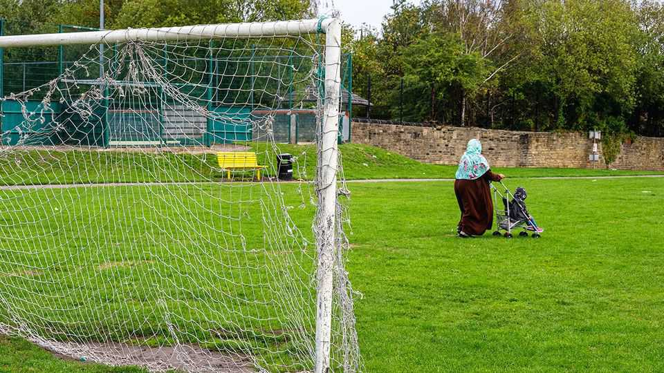
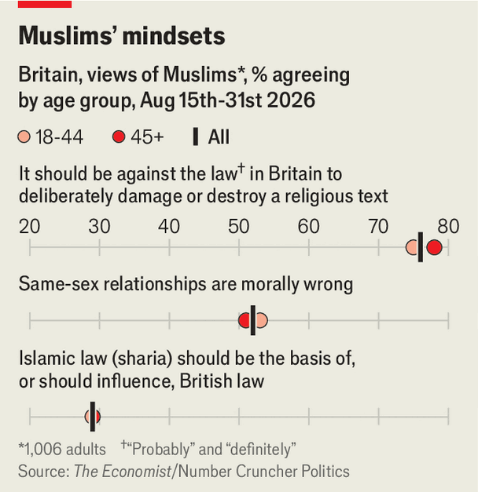

Islamism is a threat to Britain. Islam is not
The government is struggling to deal with the problem

Sep 10th 2026
Sohail Ahmed, a former Islamist, was six years old when his parents radicalised him. He remembers music being banned from the house, and his teddy bear having its head cut off (many radicals prohibit representations of sentient creatures). The catalyst was the Bosnian genocide of 1992-95. “This is how much white people hate Muslims,” Mr Ahmed recalls being told. It was the first wave of radicalisation among British Muslims, he says. The second came with 9/11, Afghanistan and Iraq. Gaza, he fears, is the third—allowing extremists “to drive a wedge between Muslims and non-Muslims”.
That wedge may be growing. “Their doctrine is simply not compatible with our culture,” wrote Charlie Downes in a recent social-media tirade. The campaigns director of Restore Britain, a far-right party, was referring to Muslims. Last year a YouGov poll found that 41% of Britons think Muslim immigrants have a negative impact on the country, more than double the figure for any other religious migrant group; 53% agreed that Islam is incompatible with British values.
Some of that anxiety comes from the speed of change. Over the past 25 years Britain’s Muslim population has more than doubled, to 7% of the total. Around 38% are of Pakistani heritage. Bangladeshis make up 15% and the rest are a mix from South Asia, Africa and the Middle East. Half were born in Britain, but over the past five years roughly as many Muslims have immigrated to Britain as in any previous decade.
Scandal has bred suspicion. Synagogue attacks and the abuse of British girls by gangs of men of predominantly Pakistani heritage have amplified worries about Islam’s role in the country.
The idea that Muslims pose a threat is unfounded. But Islamism, in Europe a fringe ideology that believes government and society should be guided by Islamic principles, is indeed a threat. It is an attempt to administer Islamic principles through state institutions—for sharia to become the law. It is an authoritarian ideology that rejects integration and opposes pluralism, free expression and equal rights. This can lend itself to violent tactics. But jihadists are just one type of Islamist. Others seek influence through lobbying and protests. Non-violent Islamism is an issue Britain has struggled to deal with.

It is hard to estimate the prevalence of Islamist sympathy. A new poll commissioned by The Economist finds that 52% of Muslims in Britain think same-sex relationships are “morally wrong” (see chart), compared with 13% of the general public who “opposed” same-sex relationships in the 2021 British Social Attitudes survey. A majority (62%) say that a woman should wear the hijab (headscarf) in the presence of men other than their husband or close relatives; 20% say that it is not a matter of personal choice.
Being a social conservative does not make you a threat to Western values. Being an Islamist does. Counter-extremism researchers estimate that perhaps 20% of British Muslims have Islamist sympathies. Our poll finds that 33% of Muslims in Britain think that “Islamic principles should guide public life, laws, politics and government”; 29% think sharia should play some role in British law; and 20% think Islamic teaching should take priority over British law if there is a clash. According to 32% of those surveyed, violence can be justified if someone insults the Prophet Muhammad; 76% believe it should be against the law to deliberately damage a religious text.
Most Muslims The Economist spoke to for this article said they had never met an Islamist, and knew little about the ideology. “I think we are attacked unfairly,” says Mukhtar Ali, a former trade unionist in Bradford. “We are a part of Britain and we are very proud of that.” Sometimes the line is blurrier. Shahid Ali, an imam, says, “It is stupidity to want sharia law in England.” But on Facebook he castigates Muslims for not working harder to create a caliphate.
According to Sir Ken McCallum, head of MI5, Britain’s domestic-security service, some 75% of its counter-terrorism workload concerns Islamists. But most Islamists are not violent. They prefer a strategy of “entryism”: the idea that a small group of ideologues can wield outsize influence by occupying positions of power.
Several big Muslim organisations remain beyond the pale for the government. In 2014 an inquiry by the Department for Education discovered a “co-ordinated, deliberate and sustained” effort to introduce an “aggressive Islamic ethos into a few schools in Birmingham”. The Metropolitan Police have had to cut ties with a number of advisers on Muslim issues after concerns were raised about their views, connections and social-media posts. In July the head of the Al-Khair Foundation, one of Britain’s biggest Muslim charities, was arrested after America’s FBI accused him of funnelling funds to Hamas.
Gaza is a flashpoint. Hostility to Israel and Western intervention in the Middle East has nurtured an alliance between Islamists and the populist left. The Green Party mayor of Lewisham, in London, has close links with Shakeel Begg, a local imam described by a judge in 2016 as an “extremist” who “encouraged religious violence”. Given their opposing views on most social issues, a Green-Islamist alliance may look odd. But hardline clerics tell British Muslims to focus on more urgent matters, like Gaza. A survey by 5Pillars, an Islamist blog, found that 20% of its readers had planned to vote Green in recent local elections.

The impact of these Islamist networks is most obvious in how local authorities respond to issues of faith. In 2021 a schoolteacher in Batley, Yorkshire, received death threats after showing a cartoon of the Prophet Muhammad during a religious-studies lesson (he remains in hiding). An autistic schoolboy in nearby Wakefield received similar threats after allegedly dropping a Koran. Following protests led by local imams, and criticism from Muslim councillors, both the teacher and schoolboy were suspended. Those issuing death threats faced no serious police action.
Underlying that response is the false premise, promoted by Islamists, that all Muslims share their religious sensitivities. The problem, as Hazem Kandil of Cambridge University puts it, is that “decision-makers don’t understand that a lot of the Muslims they come across in these spaces represent Islamism and not Islam.”
Hannah Stuart, director of the Counter Extremism Group, a think-tank, worries that nationally, too, Islamist framings are too often allowed to dominate policy debates—notably around “Islamophobia”. She points to the government’s recently published definition of anti-Muslim hostility, which critics, including many Muslims, argue undermines free speech by conflating criticism of Islam with bigotry against Muslims. Some suspect it was drafted with input from Islamist-leaning organisations.
Some Muslim campaign groups say that the government should close down Prevent, its counter-radicalisation programme, which they consider to be “Islamophobic”. The effect, Ms Stuart says, is “to cast concerns around Islamism as evidence of anti-Muslim prejudice”.
This has had an impact. In 2016 Andy Burnham, now prime minister, called Prevent “toxic” and said it should be scrapped. Islamist extremism accounted for just 8% of Prevent referrals last year, despite making up most of the security services’ anti-terrorist caseload. In 2023 a controversial independent review found that “the narrative that Prevent intends to harm Muslim communities” had led to a “hesitancy” on “reporting Islamist-related concerns”.
The Muslim Vote, a campaign group, hopes that an expanding Muslim population will elect many more independent Muslim MPs at the next election. Already, three of the four it has endorsed have been a voice for the anti-Prevent campaign.
Islamist networks thrive in dense, segregated, poor Muslim communities such as Blackburn, Lancashire. Half of its 12 council wards are over 60% Muslim; two are over 80%. Saima Afzal, a former councillor who campaigns against abuse of women in the South Asian community, describes sustained intimidation from male Muslim leaders well-connected to local politicians.
Nationally, Muslim segregation is falling. But averages can obscure local trends. Using census data for England and Wales, we calculate that in 2001 just 66 neighbourhoods had a Muslim population of over 70%. By 2021 that had risen to 237 (out of a total of 35,000). Arguably, Islamists have more space to work in than ever before.
The victims are often other Muslims. When secular Bangladeshis in east London receive threats from Islamists, they complain that police turn a blind eye. Women are most vulnerable. A 2018 government investigation estimated that up to 85 sharia councils exist in Britain. They are voluntary, with no legal weight, but worriers argue that they enable misogyny and coercion—and the police and local councils are reluctant to intervene. “Many professionals are terrified of being called racist or Islamophobic,” says Ms Afzal.

Right-wingers often claim that new arrivals import extremist beliefs. A greater danger, warn counter-extremism experts, is that newcomers live in isolated, conservative communities where they never experience multicultural Britain. A 2016 review found that pupils at one primary school in Blackburn estimated that Britain’s population was between 50% and 90% Asian. “There are schools in this country that don’t have a single white British child,” says Ghaffar Hussain, director of Groundswell, an organisation working on counter-extremism. “If you tell new immigrants to blend in, they will ask: ‘Blend into what?’”
Islamists and the far right agree that Islam is incompatible with Western civilisation. Both portray Islamism as the normative version of British Islam. It is not. Sohail Ahmed found his way out of radicalism thanks partly to seeing that Muslim scholars who embraced scientific reasoning long before the European enlightenment offered a form of Islam that bears little resemblance to that of today’s Islamists. “I was taught to hate other Muslims even more than non-Muslims,” he says.
In Whitechapel, a Muslim-majority area of London, Kismet is a cosy café celebrating Muslim culture. Set up by Muddassar Ahmed, it hosts jazz nights, Muslim comedians and a spectacular collection of Ottoman-era maps. It does not host hardline groups which “want to tell other Muslims they’re doing Islam wrong”, explains Mr Ahmed. “I won’t have them here,” he says. “I think they’re nuts.” ■